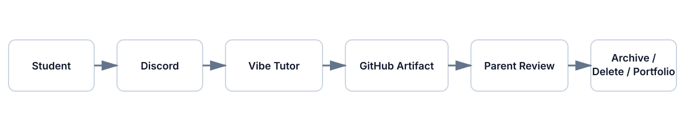

OpenTutor uses a parent-supervised data model. This page describes proposed defaults for an experimental operating model. It is not legal advice.
| Area | Recommended Default |
|---|---|
| Student repositories | Private by default |
| Student names | Use pseudonyms, initials, or parent-approved display names |
| Discord channels | Locked down by role |
| AI prompts | Avoid sensitive personal information |
| Tutor logs | Parent-visible with defined retention |
| Public portfolios | Opt-in only |
| Data deletion | Documented parent process |
| Exports | Parent-accessible learning records |

This document is a framework for parent-led governance, not a compliance certification or legal determination.